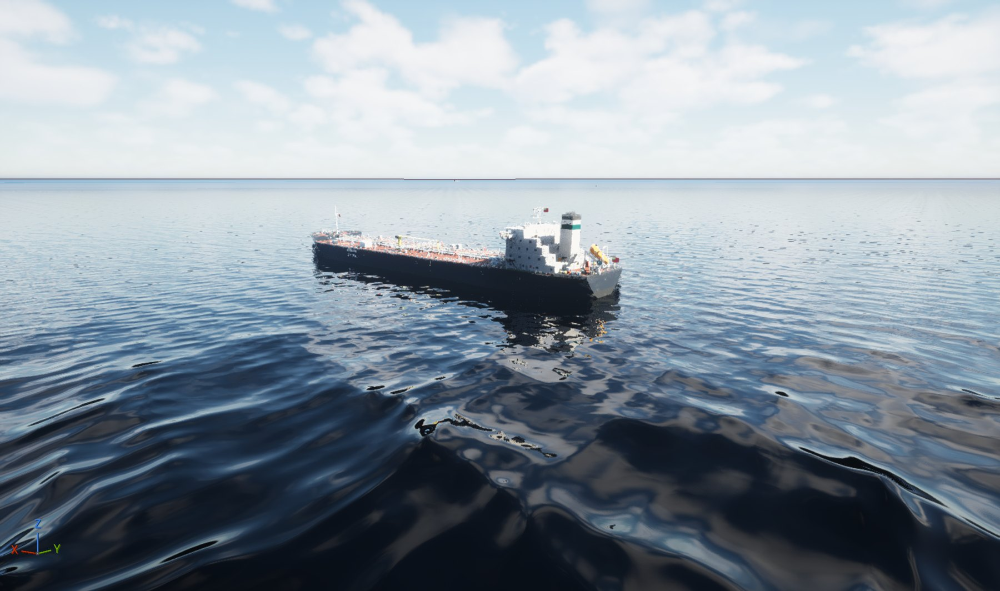
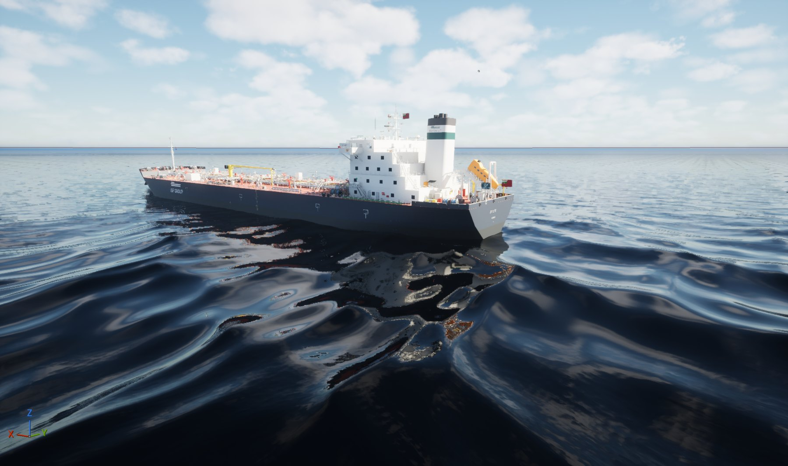
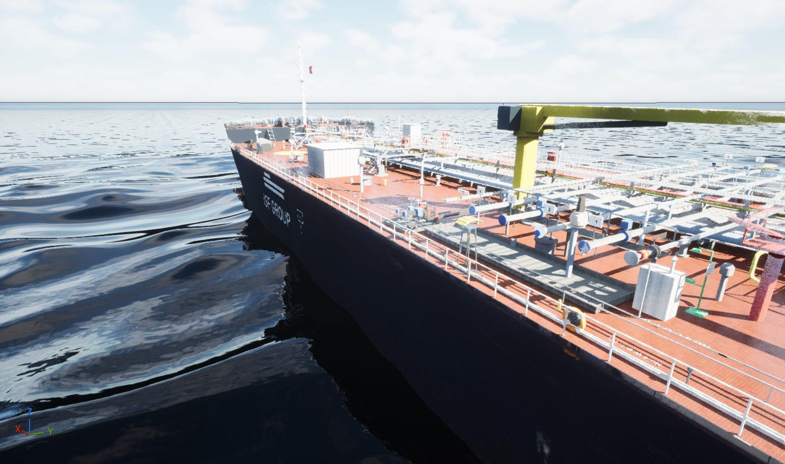
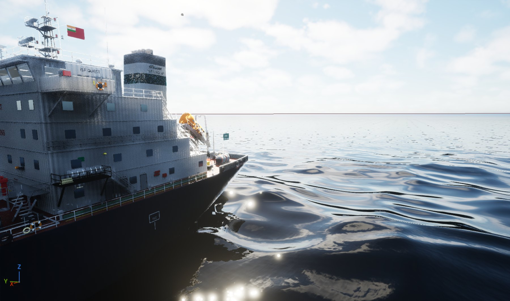
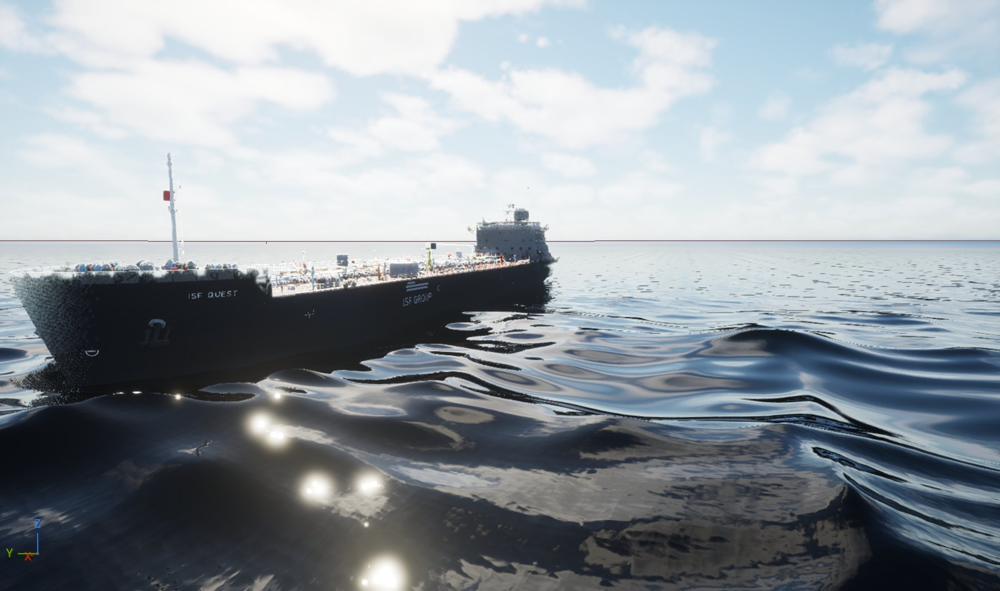
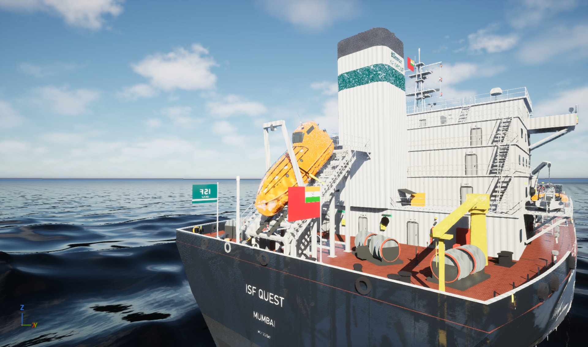
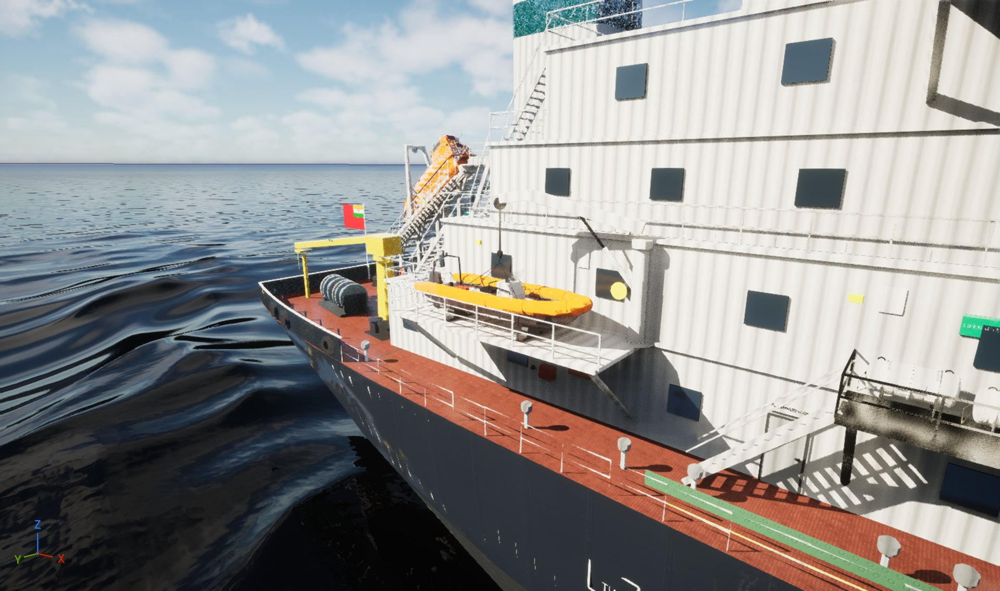

Rendered in Unreal Engine with real-time sky, volumetric clouds, Lumen global illumination, an ocean water body and photo-scanned paint textures. Work in progress towards the VR training ship. Back to the interactive walkthrough






